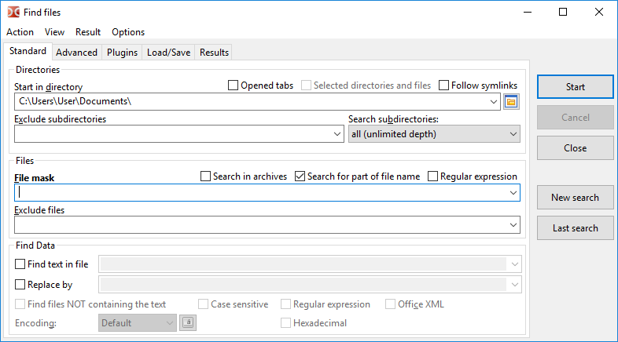
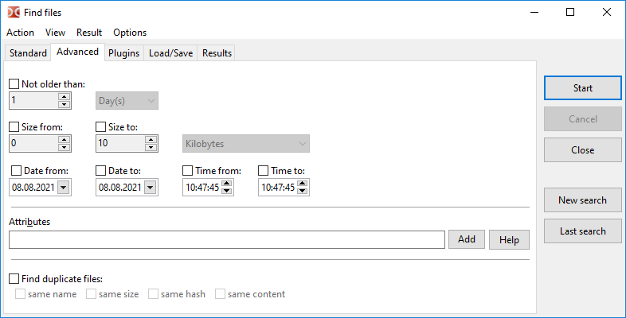
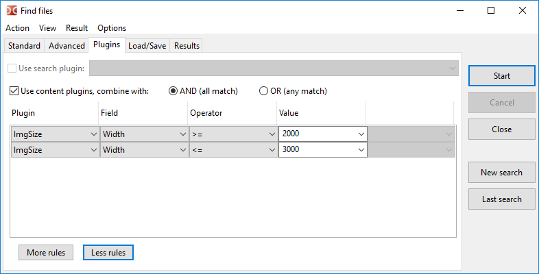
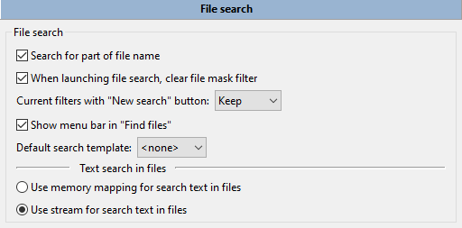

在此选项卡中，我们可以通过名称和内容搜索文件。

开始搜索的目录字段指定了开始搜索的目录，默认将使用活动面板的当前目录。
指定文件搜索位置的其他选项：
打开的标签 – 仅使用打开标签的目录（活动和非活动面板的标签）。
选定的目录和文件 – 如果启用，搜索将仅在活动面板中选定的文件和文件夹中进行。如果文件面板中有选定的文件/文件夹，此选项将自动启用。
跟随符号链接 – 如果找到指向目录的符号链接，将读取并使用目标目录，否则该符号链接将被视为常规文件。
排除子目录 – 要从搜索中排除的目录列表，在这里我们可以指定文件夹名称以及相对或绝对路径。
搜索子目录 可以有：
当前目录仅限于，
选择级别数量（从 1 到 100），
所有（无限深度）。
此设置控制文件系统树中搜索的深度。如果设置为“仅当前目录”，则搜索仅在“起始目录”字段中指定的目录中进行（不包括任何子目录）。
文件掩码字段设置搜索的掩码。或者我们可以只指定文件名或其部分。
额外选项：
在压缩文件中搜索 – 如果启用，Double Commander将尝试额外读取搜索目录中的所有压缩文件。支持的格式列表取决于添加的打包插件。
搜索文件名的一部分 – 如果我们想使用确切的文件名，则应禁用此功能。
正则表达式 – 如果启用，我们可以使用 正则表达式。
排除文件 – 要从搜索中排除的文件名列表。也支持通配符。
注意：文件掩码、排除文件、起始目录和排除子目录允许输入多个值，用分号 “;” 分隔且不带空格。如果我们需要查找名称中包含分号的文件，可以使用正则表达式。
如果 在文件中查找文本 复选框被启用，系统将会在文件中搜索指定的文本。我们还可以通过启用复选框，将此文本替换为 替换为 字段中指定的任何其他文本。
额外选项：
查找不包含文本的文件 – 显示不包含在文件中查找的文本中指定的文本的文件。
区分大小写 – 表示大写字母与小写字母应当区分，例如“Fallout”和“fallout”将是不同的。
十六进制 – 搜索十六进制字符（不区分大小写，字符之间可以有或没有空格，例如，“C0 C1 C2”或“c0c1c2”）。
Office XML – 使在 Microsoft Office (DOCX, XLSX) 和 OpenOffice/LibreOffice (ODT, ODS) 文件中进行搜索成为可能。
我们还可以设置编码（UTF、ISO、KOI、DOS、ANSI 等）并启用正则表达式。
关于文本编码的说明：我们可以设置文本编码或使用特殊值之一：
默认 – 取决于操作系统和所选的系统区域设置：
Windows：默认系统 ANSI 编码。
Linux和Unix：默认系统文本编码，现代系统通常使用 UTF-8。
ANSI – 默认系统 ANSI 编码（取决于系统区域设置）。
OEM – 默认系统 OEM (DOS) 编码（取决于系统区域设置）。
编码按钮 (  ) 允许指定多个编码。
) 允许指定多个编码。
开始按钮开始搜索，取消停止搜索，关闭关闭查找文件窗口。
新搜索 – 清除旧结果并允许开始新的搜索（也可以使用新条件）。
上次搜索 – 从上一次搜索加载参数（在当前会话中，在关闭Double Commander之前）。
默认情况下，Double Commander 会保存输入字段的历史记录，要删除历史记录中不必要的条目，我们可以使用 Shift+Del ，我们还可以在 配置 设置部分禁用保存历史记录。
选项卡 高级 允许指定附加条件：文件的日期、时间和年龄（按修改日期）、最小和最大文件大小，以及文件属性。

文件属性可以手动指定，也可以使用位于添加按钮上的小助手（有关使用文件属性的更多详细信息，请参见下文）。帮助按钮打开本页面的下一个子部分。
在这里，我们还可以选择使用以下一个或多个标准来搜索重复文件：
比较文件名；
比较文件大小；
比较文件哈希：将使用 BLAKE2b (x64) 或 BLAKE2s 校验和；
比较文件内容（逐字节比较）。
结果将显示文件名、匹配文件的组号和文件位置。此外，在将数据输入到列表框后，我们可以使用特殊选择模式，在该模式下我们可以仅选择重复项：选择一组 和 取消选择一组 在 标记 子菜单中（内部命令 cm_MarkPlus 和 cm_MarkMinus ）。
要搜索特定属性，我们必须输入一个字符串模式，该模式指定要搜索哪些属性，以及它们是否应启用或禁用。
单个属性用以下格式表示：
< 属性>+ 或 < 属性>-
加号表示文件必须设置该属性，减号表示文件必须不设置该属性。
各种 <attribute> 标识符如下：
| Windows 中的属性 | |
|---|---|
| 属性字符 | 含义 |
a | 存档 |
c | 压缩（NTFS 压缩） |
d | 目录 |
e | 加密（EFS 加密） |
h | 隐藏 |
l | 符号链接 |
p | 稀疏 |
r | 只读 |
s | 系统 |
t | 临时 |
Unix/Linux 中的属性（权限） | |
|---|---|
| 权限字符 | 含义 |
ur | 用户可读 |
uw | 用户可写 |
ux | 用户执行 |
gr | 用户所在组可读 |
gw | 用户所在组可写 |
gx | 用户所在组执行 |
or | 其他用户可读 |
ow | 其他用户可写 |
ox | 其他用户执行 |
us | 设置用户 ID |
gs | 设置组 ID |
sb | 粘贴位 |
Unix/Linux 中的属性（文件类型） | |
|---|---|
| 文件类型字母 | 含义 |
b | 块设备 |
c | 字符设备 |
d | 目录 |
f | 命名管道 (FIFO) |
l | 符号链接 |
r | 常规文件 |
s | 接口 |
在 Unix/Linux 中，我们也可以使用权限的八进制表示法。例如，0750 与ur、uw、ux、gr和gx的组合是相同的。
多个属性可以通过 AND 关系组合在一起。只需一个接一个地指定模式。
例如：r+s+h+ 匹配具有所有三个属性的文件：只读、隐藏和系统属性。
此外，这些 AND 属性组可以通过 OR 关系组合在一起。这是通过使用“|”字符（竖线）来实现的。
例如：r+|s+h+ 匹配包含以下内容的文件：
可以使用 ! 字符在序列开始时来否定 AND 序列。
例如：!r+s+h+ 匹配没有设置所有三个属性的文件：只读、隐藏和系统属性。匹配的文件可以没有、一个或多个这些属性，但不能全部都有。
否定仅适用于 AND 序列，因此模式 !r+|!s+h+ 匹配的文件是：
r-相同）| Windows 中的示例 | |
|---|---|
| 示例字符 | 如何解读 |
a+s-h- | 匹配具有归档属性且没有系统或隐藏属性的文件 |
e+|c+ | 匹配压缩或加密的文件 |
d- | 匹配文件但不匹配目录 |
| Unix/Linux 中的示例 | |
|---|---|
| 示例字符 | 如何解读 |
uw+|gw+|ow+ | 匹配可由用户、组或其他任何人写入的文件 |
222+ | 匹配用户、组和其他任何人可写的文件 |
d+ox+ | 匹配任何人都可以访问的目录 |
!700+ | 匹配用户无法完全访问的文件 |
使用搜索（DSX）和内容（WDX）插件进行搜索（插件类型及其安装的描述在这里）。
按宽度搜索图像的示例，包含最小值和最大值：

DSX 插件接口允许从“标准”和“高级”选项卡发送参数值，传递值的确切列表取决于特定插件的功能。
WDX 插件补充了搜索，它们的字段可以根据以下规则进行组合：
AND 与（全部匹配） – 所有条件必须匹配。
OR 或（任何匹配） – 一次匹配就足够。
操作符 和 值 取决于插件字段返回的数据类型：数字、字符串、日期、时间或布尔类型。对于某些数值，我们可以选择一个测量单位（例如，大小或持续时间）。支持以下比较操作：
| 操作符 | 描述 |
|---|---|
= |
等于 |
!= |
不等于 |
=(case) |
相等，区分大小写 |
!=(case) |
不相等，区分大小写 |
> |
更大 |
< |
更小 |
>= |
大于或等于 |
<= |
小于或等于 |
contains |
字符串包含特定文本 |
!contains |
字符串不包含特定文本 |
contains(case) |
字符串包含特定文本，区分大小写 |
!contains(case) |
字符串不包含特定文本，区分大小写 |
regexp |
字符串匹配 正则表达式 |
!regexp |
字符串不匹配正则表达式 |
选项卡 加载/保存 – 允许保存搜索参数，以便以后可以再次使用。
此外，在这里我们可以看到在程序设置中创建的模板（颜色 > 文件类型，工具提示）以及在某些工具中（选择一组，同步目录）。
在模板列表下方有一个提示字段：对于所选模板，显示文件掩码和起始目录的值（如果已保存）。
此选项卡包含搜索结果（仅是完整文件名的列表），并具有以下按钮：
查看 – 在查看器中打开选定的文件 ( F3 )。
编辑 – 在编辑器中打开选定的文件 ( F4 )。
转到文件 – 关闭搜索窗口，在活动文件面板中打开所选文件的目录，并将光标放在该文件上 ( Enter 或双击)。
传输到列表框 – 将活动文件面板中找到的文件列表传输。
上下文菜单也可用：
在新标签页中打开 – 类似于 转到文件 命令，但所选文件将在后台标签页中打开（多个选定文件将在单独的后台标签页中打开）。
在查看器中显示
在编辑器中显示
从列表中移除（或 Del ）– 允许从列表中移除不合适的结果（文件系统不会受到影响）。
显示所有找到的项目 – 取消上一个命令的操作。
要选择多个文件，我们可以使用鼠标和 Ctrl 和 Shift 键或 Shift 和箭头。
left arrow 和 right arrow 键在搜索结果列表和 新搜索 按钮之间切换焦点。
与搜索工具相关的附加参数在文件操作 > 文件搜索设置部分中呈现。

文件搜索：
搜索文件名的一部分 – 如果未选中，Double Commander将搜索精确的名称匹配。
启动文件搜索时，清除文件掩码过滤器 – 如果启用，Double Commander将在每次自动清除文件掩码字段。
当前过滤器与“新搜索”按钮 – 设置其余搜索参数的状态：Double Commander将保留它们，重置为默认状态或询问。
在“查找文件”中显示菜单栏 – 此菜单包含查找文件对话框的命令（也显示快捷键）以及快速跳转到此设置部分和快捷键设置的项目。
默认搜索模板 – 我们可以选择之前保存的搜索模板之一，Double Commander将在每次打开查找文件对话框时使用其参数作为默认参数。
文件中的文本搜索：
在文件中使用内存映射搜索文本 – 在执行搜索之前将文件复制到虚拟内存中。这更快，但需要更强大的计算机。
在文件中使用流搜索文本 – 将文件分成多个部分，然后开始搜索（速度较慢，但所需资源较少）。